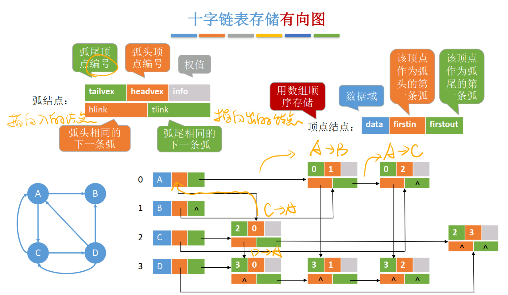

图的存储结构
一、图的存储结构
①领接矩阵：顺序存储（一维数组存点的数据，二维数组存边的连接情况）(存储无向图、有向图) ②邻接表：顺序+链式存储（顺序存点的数据，链存连接该点的边）（存储有向图、无向图） ③十字链表：链式存储（存储有向图） ④邻接多重表：链式存储（存储无向图）

二、邻接矩阵法
空间复杂度=O(|V|^2)，适合存稠密图
无向图的邻接矩阵是对称矩阵，可以压缩存储，见3.6
性质：A为图G的邻接矩阵，则A^n的元素A^n[i][j]=顶点i到顶点j的长度为n的路径的数目
计算度、入度、出度：必须遍历对应的行或列。
找相邻的边：必须遍历对应的行或列。
1.1普通图的领接矩阵法：

#define MaxVertexNum 100 //顶点数目最大值
typedef struct{
char Vex[MaxVertexNum]; //顶点表：存每个点的数据
int Edge[MaxVertexNum][MaxVertexNum];//邻接矩阵，边表：存边的连接情况
int vexnum, arcnum; //图当前的顶点数和边数（弧数）
}MGraph;
边可以是int，bool或枚举型变量。
1.2普通图的度、入度、出度
某点的度：某点的边数
无向图：
第i个结点的度=第i行(第i列)的非零元素个数。
有向图：
第i个结点的出度=第i行的非零元素个数。
第i个结点的入度=第i列的非零元素个数。
第i个结点的度=第i行、第i列的非零元素个数之和。
求顶点的度、入度、出度的时间复杂度=O(|V|)
2.带权图的领接矩阵法

#define MaxVertexNum 100 //顶点数目最大值
#define INFINITY 4294967295 //宏定义常量“无穷”，4294967295为最大的int值
typedef char VertexType; //顶点的数据类型
typedef int EdgeType; //边的数据类型
typedef struct{
VertexType Vex[MaxVertexNum]; //顶点表：存每个点的数据
EdgeType Edge[MaxVertexNum][MaxVertexNum];//邻接矩阵，边表：存边的连接情况
int vexnum, arcnum; //图当前的顶点数和边数（弧数）
}MGraph;
三、邻接表法
空间复杂度：无向图为O(|V|+2|E|)，有向图为O(|V|+|E|)，适合存稀疏图
表示方式不唯一
邻接矩阵降低了空间复杂度，但使操作不方便了：
计算度、入度、出度：计算有向图的度、入度不方便，其余很方便。
找相邻的边：找有向图的入边不方便。
图的类型描述：
与树的孩子表示法很像

#define MaxVertexNum 100 //顶点数目最大值
//"边（弧）"
typedef struct ArcNode{
int adjvex; //边（弧）指向那个结点
struct ArcNode *next; //指向下一条弧的指针
//InfoType info; //边权值
}ArcNode;
//"顶点"
typedef struct VNode{
VertexType data; //顶点数据
ArcNode *first; //顶点指向的第一条边
}VNode, AdjList[MaxVertexNum];
//用领接表存储图
typedef struct{
AdjList vertices; //顶点数组
int vernum, arcnum; ////图当前的顶点数和边数（弧数）
}ALGraph;
四、十字链表法
空间复杂度：O(|V|+|E|)，与邻接表法一样
解决了邻接表法的找入边难的问题。

五、邻接多重表
空间复杂度：O(|V|+|E|)，比邻接表法的O(|V|+2|E|)好
解决了邻接表法存两遍边的空间浪费。
删除边、删除结点等操作很方便。